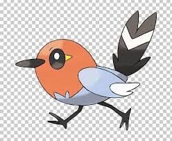

Benvenuti nella Pokèmon Page! Eh sì, BirdsWeb non è solo sui cocoriti e Meme, ma anche sui Pokèmon! Quindi, se sai almeno le basi, Ecco tutto ciò che devi sapere!
Ogni Pokèmon è di un tipo o genere diverso. Prendete di caso questa carta Pokemon di fianco. Questo Pikachu di Prima Generazione è di tipo elettro. Il che sa fare mosse come Thunder Jolt e altri.
Le avrai notato almeno una volta una carta Energia. In base alle mosse che fai, servira una carta Energia, e dopo aver messo tutto il necessario, puoi fare la mossa e infine metterle tra le carte scartate. In base al tipo di Pokemon, avrai bisogno le Energie Elettro, Pscichico, Acqua e altre. Mentre se noti le palline bianche, significa che devi mettere un'Energia casuale.
Ogni Pokemon in base al tipo ha una debolezza. Per esempio, un tipo Elettro potrebbe avere la debolezza di un tipo d'Acqua o un tipo Lotta. Per esempio, la carta di Pikachu ha la debolezza di una mossa fatta da un tipo Lotta.
Una carta Pokemon potrebbe essere poco o molto rara, e in piu puo anche costare piu di un jet privato! Si puo indicare da dei simboli in fondo a destra o sinistra. Il cerchio indica che è comune, il rombo che è semi-rara e infine una stella è rara, due stelle sono super-rare.. MA 3 STELLE E QUASI IMPOSSIBILE DA TROVARE! Sono Iper-rari e valgono moltissimo, per esempio, una carta Allenatore Anfora Antica Gold ha 3 stelle. Questo era tutto cio che dovevi sapere. Ciao e buona partita!